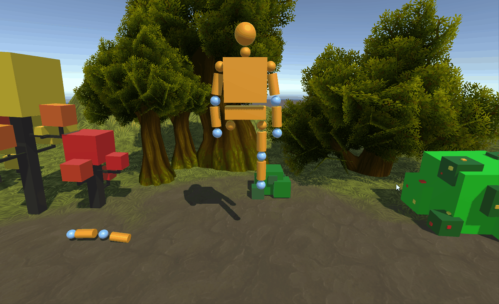

COMP 477 Project - RagDoll Dismemberment
In this project, we use Unity to simulate dismemberment for a ragdoll.
The ragdoll in its original form

Just playing with joints and moving them around

Dragging a joint causes its limb to stretch, and if the stretch is not large enough, the limb springs back to its original location
Snapping (Deattaching) a limb from the ragdoll

When we move a detached limb with the mouse, all the limb parts hang from the joint
Moving a detached limb close enough to its original parent, re-attaches it to its original position

Snapping and re-attaching a limb